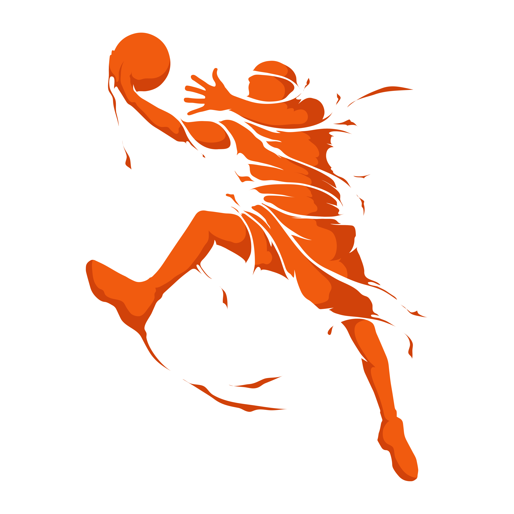

My understanding and appreciation of the collaborative power of teamwork began
when I become a fan of Steve Nash playing for the Phoenix Suns in 2007.
Leading the league in assists, he worked extremely hard in service of his team
and made everyone around him better. Despite a broken nose he persevered and they
reached the Western Conference Finals. My view as a full stack developer is the same.
I constantly seek to improve and learn so I can service my team better. Let's play ball.
